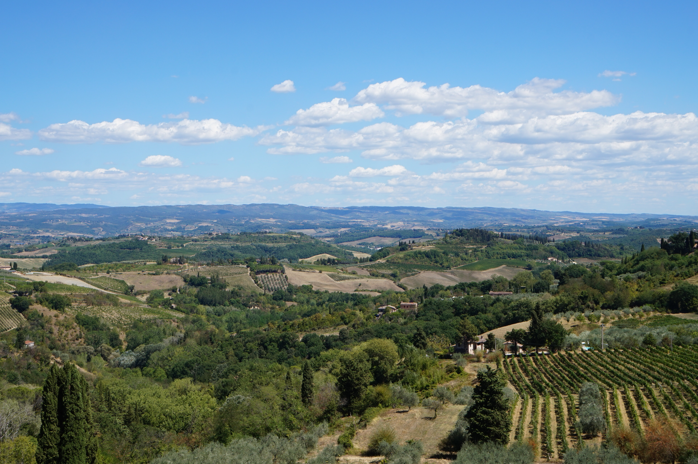

Слънчева Италия - Ренесансова архитектура, вино, пица, паста, висша мода
Публикувана на 19 януари 2021 година
Красивите италиански езера
Италия е вдъхновяваща - пиршество от безкрайни възможности за пътуване и почивка. Земята на виното, късото кафе, пицата, пастата, висшата мода, Ренесанса, архитектурните чудеса и на обвития в мистика Ватикан. Градовете на Италия са истински музеи на открито. Смело мога да заявя, че съм обиколил цяла Италия. От спиращите дъха италианските езера Комо, Маджоре, Гарда, Изео през Рая на Земята - областта Тоскана до големите ренесансови градове - Милано, Венеция, Флоренция, Верона, Торино, Болоня и Чинкве Терре, и от уникланите италиански Доломити в Северна Италия през западното крайбрежие с града шедьовър Неапол, древния град Помпей, незабравимото Амалфийско крайбрежие и елегантния италиански остров Капри, до източното карайбрежие с китните градчета Остуни, Арбелобело и Матера. В Италия има за всеки по нещо, а със сигурност съм изпуснал някои от посетените местенца, които също заслужават внимание. Препоръчвам Италия с цялото си сърце на всеки, обичащ топло време, хубава храна и невероятна архитектура.
„Италия е пълна с история и красота - срещате чудеса на изкуството и архитектурата на почти всеки ъгъл. Но аз обичам домашните аспекти на страната: специалната сладост на доматите, меката моцарела, опияняващите аромати на босилек и чесън навсякъде. "
~ Труди Стайлър
Красивите италиански езера
Италианските Доломити
Величествените италиански Доломити
Назъбените върхове на Доломитите обхващат провинциите Трентино и Алто Адидже. Европейците се събират тук през зимата в изключително гостоприемните курорти, великолепни природни условия и обширни, добре координирани ски мрежи. Това също е красива лятна дестинация, предлагаща отличен туризъм, спиращи дъха гледки и много чист, ароматен въздух. Аз и моето семейство ги посетихме именно през лятото.
Тоскана - Рай на Земята
Тоскана в своята прелест
Тоскана е един от най-посещаваните региони в Италия и туристи от цял свят идват тук по различни причини. Много от тях го посещават заради изящните произведения на изкуството и богата средновековна история, а други - за да се наслаждават на изключително красивата природа. Трети включват района в маршрута си заради неповторимата кухня и световноизвестните вина. При нас беше комбинация от трите.
Италия - за всеки по нещо
Невероятните местенца в Тоскана са неизброими
В Италия има за всеки по нещо, а със сигурност съм изпуснал някои от посетените местенца, които също заслужават внимание. Препоръчвам Италия с цялото си сърце на всеки, обичащ топло време, хубава храна и невероятна архитектура.
Наклонената кула в Пиза

Незабравимото амалфийско крайбрежие